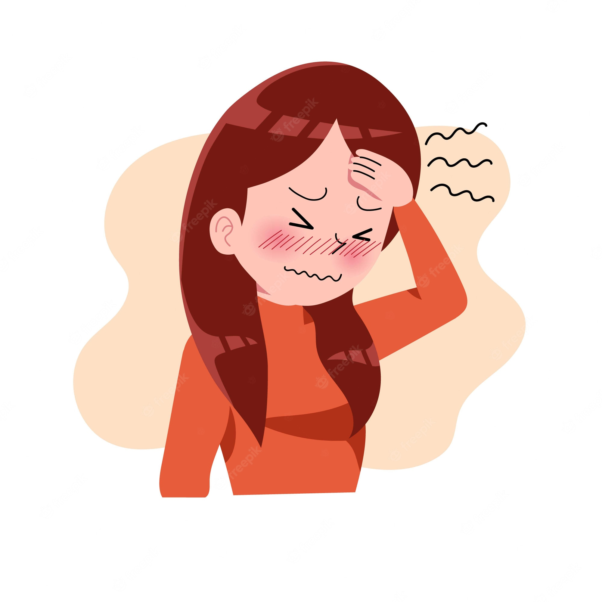

HEADACHE
Everyone suffers the occasional mild headache, but if you experience debilitating pain and/or abnormally frequent headaches, you probably want to find relief. There are countless causes of headaches, which differ for each person, so you’ll have to do some experimenting to figure out the cause of your pain. Fortunately, the vast majority of headaches are primary headaches, not the result of underlying medical conditions. The three most common types are cluster, tension-type, and migraine.
typesof headache
Cluster headache:
A cluster headache affects a specific point of the head, often the eye, and is characterized by sharp, piercing pain.
Migraine :
Migraine and tension-type headaches are far more common.
Tension-type headache
“Tension“ headaches are now called “tension-type“ headaches because pain is not only caused by stress, but also poor posture, depression, and even sexual activity. In fact, recent studies have shown a connection between low serotonin levels and so-called “tension“ headaches.

SYMPTOMS
Symptoms of a tension-type headache:
Symptoms of a tension-type headache:
1.constant, dull ache
2.felt on both sides of the head
3.a feeling of squeezing or pressure
4.does not usually interfere with routine activities
5.lasts from 30 minutes to a few days
REMEDIES
Ayurveda presents to you a number of ancient herbs that guarantee you 100 percent relief from migraines . These may include
- Bala
- kumari
- Mallika
- Amalaki
- sariva
- yastimadhu
- hareetaki
These, when blended and mixed in appropriate quantities, give amazing results.
More tips-
Be consistent. Eat at about the same time every day.
Don't skip meals. Fasting increases the risk of migraines.
Keep a food journal. Keeping track of the foods you eat and when you experience migraines can help identify potential food triggers.
Avoid foods that trigger migraines.
Ice pack held over the eyes or forehead
Heating pad set on low or hot shower to relax tense neck and shoulder muscles
Sleep, or at least resting in a dark room
Taking breaks from stressful situations
Regular exercise to increase endorphin levels and relax muscles. Even if you already have a headache, exercising may relieve the pain. However, intense exercise may bring on a headache.
Occasional use of over-the-counter medicines such as acetaminophen, ibuprofen, or aspirin can relieve both migraine and tension headaches.
HEALTHY SPIRITS is optimized for learning.Remidies might be simplified to improve reading and basic understanding. Tutorials, references, and examples are constantly reviewed to avoid errors, but we cannot warrant full correctness of all content. While using this site, you agree to have read and accepted our terms of use, cookie and privacy policy.
Copyright 1999-2022 by Refsnes Data. All Rights Reserved.